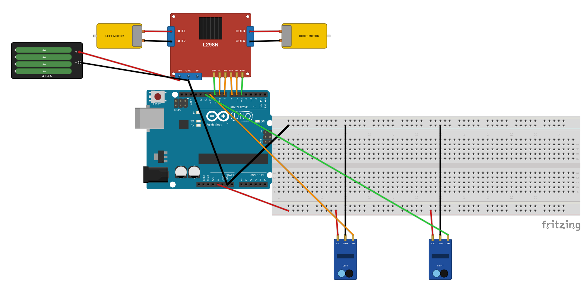

בשלב זה עושים הכול ברצף אחד: פותחים את התיקייה, מוודאים שהמכונית מורכבת ומחווטת, מעלים את קוד הבסיס ועושים נסיעה נקייה אחת על הקו הישר. ואז מציצים בשלוש הבחירות שיהפכו את המכונית הזאת לשלכם: מהירות, תיקון וצורת המסלול. אם המכונית מגרסה 1 כבר בנויה — השלב הזה קצר. אם בונים מהתחלה — זו הבנייה הגדולה ביותר בתוכנית עד כה, והיא יכולה להימשך גם על פני כמה מפגשים. זה בסדר גמור — לוקחים את הזמן ומתקדמים צעד אחר צעד.
בסרגל הצד של סייר הקבצים לוחצים על Google Drive, הולכים ל-My Drive ← Arduino_Projects, ונכנסים לתיקייה עם הכינוי שלכם.
אם תיקיית Project_4_Line_Following_Car כבר קיימת מגרסה 1 — פותחים אותה. אם לא — יוצרים אותה עכשיו.
פותחים את קלוד קוד ומגדירים אותו לעבוד בתיקייה הזו.
עושים בדיקה מהירה:
בודקים במשיכה עדינה את חיבורי ההלחמה של המנועים (חיבור טוב לא זז).
מוודאים ששני חיישני הקו פונים לרצפה בקדמת המכונית ומקבלים VCC ו-GND מפסי החשמל של הברדבורד.
משווים כל חוט לתרשים שלמטה.
בודקים שהסוללות מלאות.
עוברים יחד עם המורה על כרטיסי הבנייה של גרסה 1 — שלבים 1 עד 4 (עמדת ההלחמה, הלחמת המנועים, הרכבת השלדה, החיווט) — וחוזרים לכאן. מרכיבים משקפי מגן כל זמן שמלחם דולק בעמדה, ומלחימים רק יחד עם המורה; כללי הבטיחות המלאים נמצאים בכרטיסים R4 ו-R6.
מרימים את המכונית כך שהגלגלים באוויר — כדי שהיא לא תברח על השולחן באמצע ההעלאה.
מחברים את כבל ה-USB, פותחים ב-Arduino IDE את ino_files/T2_line_follow_starter/T2_line_follow_starter.ino ולוחצים על Upload.
אחרי "Done uploading" מנתקים את ה-USB, ובודקים שהחוט מ-5V של בקר המנועים אל 5V של הארדואינו מחובר — כך הסוללות מזינות גם את הארדואינו בנסיעה בלי כבל.
מניחים את המכונית בתחילת הקו הישר, כך שהקו השחור עובר בין שני חיישני הקו.
מפעילים את מתג הסוללות ומשחררים — למכונית יש שתי שניות של המתנה, ואז היא מתחילה לנסוע לבד לאורך הקו.
הצצה קדימה: קוראים את שלוש הבחירות שמחכות לכם (למטה).
L298N Arduino ENB ──────────── D5 (right speed) IN4 ──────────── D6 IN3 ──────────── D7 (right direction) IN2 ──────────── D8 IN1 ──────────── D9 (left direction) ENA ──────────── D10 (left speed) Motors Left motor ──── OUT1 / OUT2 Right motor ──── OUT3 / OUT4 Line sensors LEFT OUT ────── D11 RIGHT OUT ────── D12 VCC / GND ────── breadboard (+) / (−) rails Power Battery (+) ──── L298N VIN Battery (−) ──── L298N GND L298N GND ────── Arduino GND <-- COMMON GROUND! L298N 5V ────── Arduino 5V Arduino 5V ──── (+) rail Arduino GND ──── (−) rail

בקר המנועים והארדואינו חייבים לחלוק חוט GND משותף (L298N GND ↔ Arduino GND). בלעדיו המכונית לא נוסעת, או מתנהגת מוזר בלי הסבר — וזו הטעות הנפוצה ביותר בפרויקט הזה. אם משהו לא עובד, בודקים קודם כול את החוט הזה.
אחרי ההעלאה מופיעה הודעה ירוקה "Done uploading". על הרצפה: המכונית נוסעת לאורך הקו הישר ומתקנת את עצמה בעדינות ימינה ושמאלה כשהיא סוטה. נדנוד קטן הוא תקין — ככה עוקב קו עובד. כשמרימים את המכונית מהרצפה, או כששני החיישנים רואים שחור יחד — המנועים נעצרים.
גלגל אחד מסתובב אחורה? נורמלי לגמרי — ככה יוצאת כמעט כל הרכבה ראשונה. מחליפים בין שני החוטים של אותו מנוע בהדקי ה-OUT של בקר המנועים — תיקון של 30 שניות, לא כישלון. בשלבים הבאים תהפכו את המכונית הזאת לשלכם — תבחרו מהירות, תיקון ומסלול.
BASE_SPEED):איטי (יציב ובטוח בכל עיקול), בינוני (ברירת המחדל), או מהיר (מלהיב — ומאתגר בעיקולים). בוחרים אחד.
CORRECTION):עדין (נסיעה חלקה בקו ישר, עלול לפספס עיקול חד) או חזק (נצמד לעיקולים, מתנדנד בקו ישר). כאן משנים את הקוד בעצמכם בעזרת קלוד קוד.
ישר, עיקול עדין או עיקול חד — ומניחים מסלול משלכם על הרצפה עם סרט בידוד שחור.
אין צורך להחליט עכשיו — רק לקרוא, כדי לדעת מה מגיע. הבחירות משפיעות זו על זו (מהיר + עיקול חד = אתגר אמיתי), ופרטים על כל אופציה בכרטיסי העזר.
בשלב 3 תשנו את הקוד בעצמכם (ערוץ A, גרסה 2): מתארים מה רוצים, שואלים את קלוד קוד, קוראים את התשובה, עורכים את הקוד ומעלים מחדש. זו לא העתקה — אתם מבינים מה שיניתם.
T2_line_follow_starter הועלה בהצלחהLINE_IS_HIGH הפוכה. מבקשים מקלוד קוד לעזור להפוך אותה ומעלים מחדש — ואם רוצים, קוראים גם למורה.